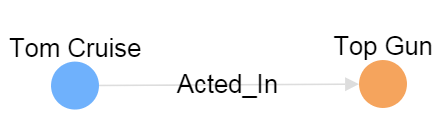
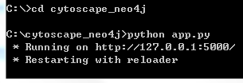
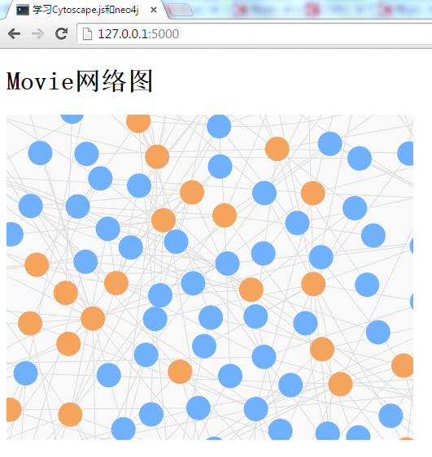

用可视化的方式来展示网络关系图是一件挺有趣的事情，在选定用cytoscape.js来显示neo4j图形数据库的数据后我做了一个原型，并用下面三篇博客来记录了做原型的过程。
- 用cytoscape.js展示neo4j网络关系图 - 1. Flask
- 用cytoscape.js展示neo4j网络关系图 - 2. py2neo
- 用cytoscape.js展示neo4j网络关系图 - 3. cytoscape.js（这篇博客）
要完成的功能
要把neo4j数据库里面的Movie数据正确的显示到前端，我们需要完成如下的功能。
上一篇博客介绍了如何用py2neo来获取neo4j的节点及关系，现在我们要用cytoscape.js来把用neo4j取得的节点和关系显示到网页上。
先看看cytoscape.js是什么
cytoscape是一个网络图的可视化工具，大量的生物分子/基因领域的公司用它来做可视化分析。由于它的通用性，慢慢的也被其他领域的人用来做网络的可视化和分析。cytoscape分为两种，一种叫做cytoscape desktop，是一个桌面软件，可以把数据导入然后生成可视化的网络图进行分析；另一种叫做cytoscape.js，是一个javascript库，主要给开发人员使用，来在网页上生成可视化的网络图。我们要用的是后者。
neo4j有三个概念：图(Graph)，节点(Node)和关系(Relationship)。cytoscape.js也有三个对应的概念：图（用方法cytoscape()来生成），节点(Node)和边(Edge)。
下面是用cytoscape.js画图的典型方法。
1 | var cy = cytoscape({ |
主要是用cytoscape()函数生成cy，并填充其各种属性（如：container, elements, style, layout等等）。让我们来写个简单的网页来生成下面的图。所有的代码都在一个html文件中，你可以把它存成index.html，然后用浏览器直接打开看效果。

1 |
|
代码5-12行设置图的属性，这是一个长400px宽300px底色灰色的图。代码15-40行我们调用cytoscape()函数并初始化它来完成关系图的绘制。
代码18行，container属性被设置为用<div id="cy"></div>这个div来绘制图。
代码30-36行，elements属性包含的是图里的节点和边。
节点包括多个属性值，如：{data: {id: '172', name: 'Tom Cruise', label: 'Person'}}。其中只有id是保留属性必须填，其它如name还有label都是我们自定义的属性，你可以自定义任意多的属性。
边和节点的属性值很类似，如：{data: {source: '172', target: '183', relationship: 'Acted_In'}}。边也有id是保留属性但不是必须的，source/target都是保留属性，source表示开始节点（start node）的id值，target是结束节点（end node）的id值，relationship是我们自定义的属性。
有了节点和边的数据，那它们显示出来是什么样子的则是由代码19-29行的style属性决定的。style由多个如下的（selector + css）样式组成。
1 | { selector: 'node[label = "Person"]', |
selector属性选择要修改样式的元素，上面我们选择了label = "Person"的节点。css设置样式。这里我们设置Person节点的背景颜色为’#6FB1FC’。content属性决定节点上显示的文字是什么，我们用了一个data()函数来从节点数据里取出自定义节点（{data: {id: '172', name: 'Tom Cruise', label: 'Person'}}）里name值，也就是’Tom Cruise’。
1 | { selector: 'edge', |
边（edge）的style和节点有点不一样。我们选择显示的文字是relationship的值。而且我们需要把边的三角形箭头显示出来（'target-arrow-shape': 'triangle'）。
代码37行，layout属性。layout布局网络图里的节点显示的位置。你可以选择不同类型的layout把整个网络显示成树形，圆形，网格，力导向图等等。我们随便选了一个’grid’网格布局。
开始写代码
我们再回过头来看看前面我们建好的Flask网站的目录结构。下面所有的源代码都可以从我的github项目cytoscape_neo4j clone。
1 | C:\cytoscape_neo4j |
我们需要修改app.py和code.js。先看看code.js，它从app.py获取JSON数据，然后调用cytoscape()函数显示网络图。
用cytoscape.js来显示Movie网络关系图
下面是code.js的代码。（源代码：cytoscape_neo4j/static/js/code.js）
1 | $(function(){ |
和前面讲的代码大同小异。代码第2行，用jQuery的$.get('/graph', function(result) {}, 'json')方法从网站后端的’/graph’路径获得JSON数据存在result中。JSON数据的内容如下：
1 | { |
我们只需要在代码第12行，elements: result.elements把result里的elements复给elements属性就好。
代码3-6行，style和前面讲到的差不多，这次我们并没有设content属性，所以显示的节点上不会有文字。
下面我们看看app.py是如何把neo4j的数据转成符合cytoscape要求的JSON的。
把neo4j的数据转成cytoscape需要的JSON数据
下面是app.py的代码。（源代码：cytoscape_neo4j/app.py)
1 | # coding=utf-8 |
这段代码用到了很多py2neo的函数，如果不熟悉的可以回到前一个博客看看它们的用法。
code.js中的$.get('/graph', function(result) {}, 'json')会调用到代码中的25-30行。
代码27行，nodes = map(buildNodes, graph.cypher.execute('MATCH (n) RETURN n'))。graph.cypher.execute('MATCH (n) RETURN n')获取了Movie库的所有节点。map()对每个节点调用buildNodes(nodeRecord)函数，生成数组nodes （例如[{"data": {"born": 1962, "id": "189", "label": "Person", "name": "Tom Cruise"}}, /* node2*/, /* node3 */, ...])。
代码28行，edges = map(buildEdges, graph.cypher.execute('MATCH ()-[r]->() RETURN r'))生成了所有的边。
代码30行，用Flask的jsonify函数把elements转成JSON格式返回给前端。
运行我们的代码吧！
写完了所有的代码，是时候来看看我们的劳动成果了。让我们来启动我们的网站，看看Movie库的网络关系图显示出来的效果吧。你需要：
- 启动neo4j server
- 启动Flask网站
- 用浏览器浏览网页http://127.0.0.1:5000/
双击C:\neo4j-community-2.2.1\bin\Neo4j.bat启动neo4j server。
运行如下命令启动Flask网站。

用浏览器浏览网页http://127.0.0.1:5000/，你就可以看到画出来的网络关系图了。

这里看到的关系图只是关系图的一小部分，你可以用鼠标滚轮来缩小放大来看到全貌。
到此，大家应该通过这三篇博客了解到如何利用neo4j, Flask, py2neo, cytoscape.js来显示neo4j的网络关系图了。